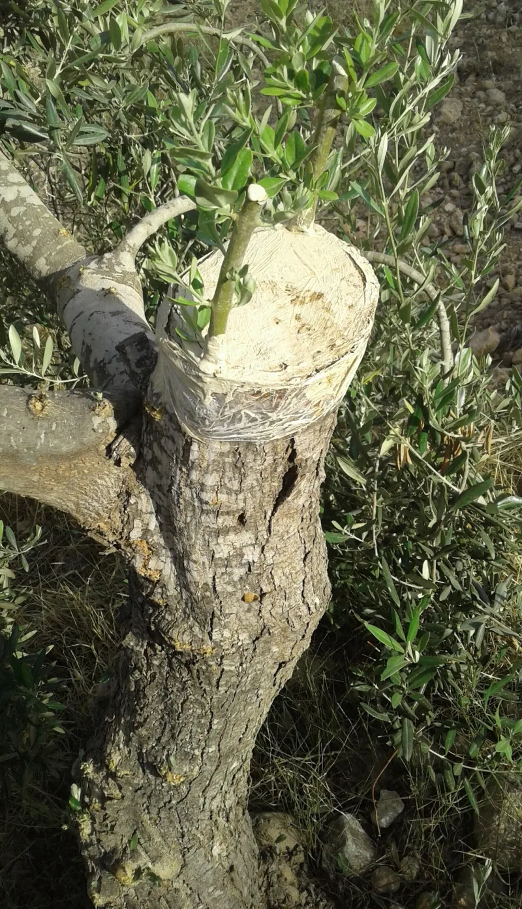

No good counter-argument has been published by the counter-missionary teachers — the Jewish speakers and writers whose work is answering Christians.
A Christian has to deal with what Christians have done. The Crusades.
The blood libel — the lie that Jews murdered Christian children. The expulsions from England and Spain.
Luther's writings. Then Christian Europe between 1941 and 1945.
Paul asks in Romans 11:1 whether God has cast away his people. He answers "God forbid." In Romans 11:29 he says God's calling of Israel "cannot be revoked." He describes the blindness as partial, and temporary, and ending.
Paul tells non-Jewish believers they are a branch grafted into someone else's tree. Then in Romans 11:18 he warns them directly: "boast not against the branches." The arrogance behind a thousand years of violence is condemned inside the New Testament itself.
Strong. There is no honest reading of Romans 11 that supports contempt.
Christians who held one were reading against their own book.
Say this first, unprompted, before you open anything else. Your friend has probably spent their whole life waiting for a Christian who says it without being pushed into it.
"I know what the word Christian has meant to Jewish families. I'm not going to pretend otherwise."

Paul wrote one thing; the church did the other, for most of its life.
This objection is not about how to read a verse. It is historical, and it deserves full weight. Whatever Romans 11 says, nineteen centuries of Christendom said otherwise.
Justin Martyr claimed Israel's inheritance for the church. Chrysostom preached against the synagogue. Crusaders massacred the Rhineland communities with Romans 11 sitting in their Bibles. Luther's On the Jews and Their Lies fed straight into the twentieth century.
A charter that failed to restrain its own people for most of its history can fairly be judged by its fruit. That is a test Jesus endorsed in Matthew 7:16. They add that even 'all Israel will be saved' has been read as meaning the church. A Jewish reader may fairly judge the text unclear at best, and window dressing at worst.
Strong in the text, but confess the church's own record before you open a verse.
Graded Strong at the level of the text. The plain sense of Romans 11 condemns replacement theology and the contempt that grew out of it.
But the history of its violation is a history of Christians breaking their own scripture, and this entry has to say that in exactly those words. This is the entry that sets the posture for the whole section, and it goes first in any real conversation. In practice: open with confession, not with argument.